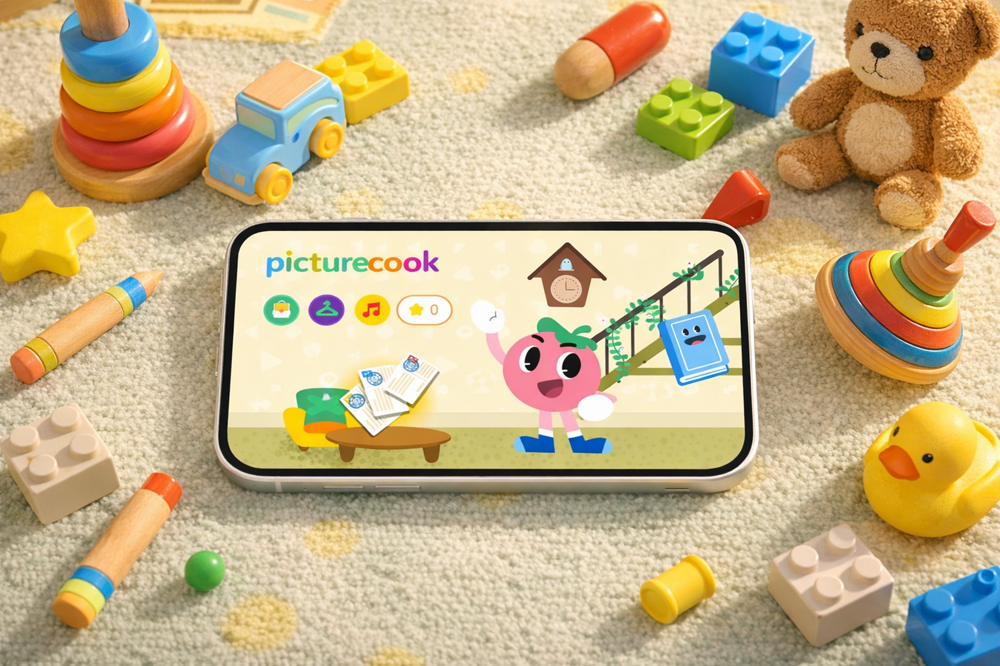
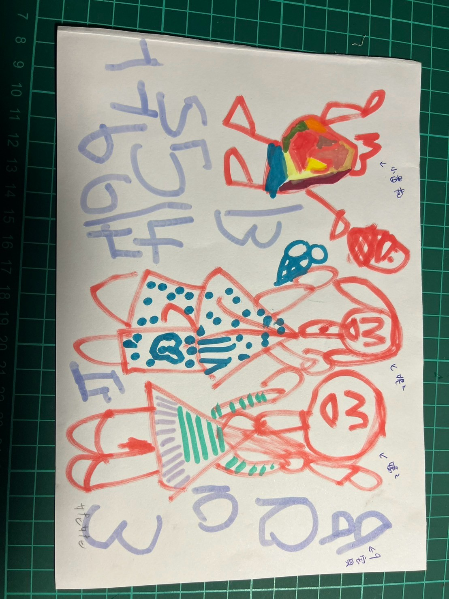
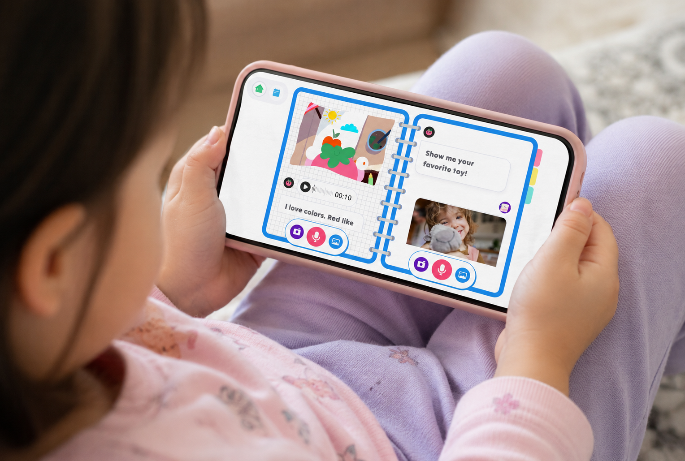
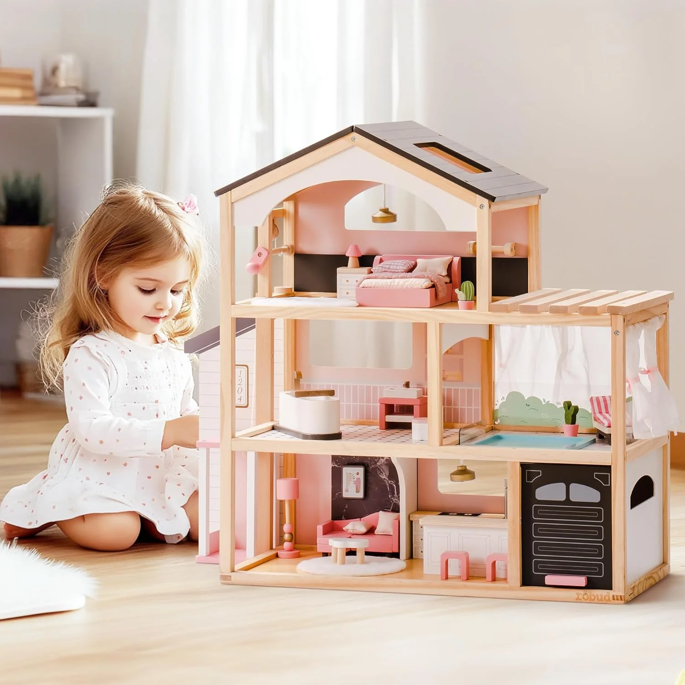
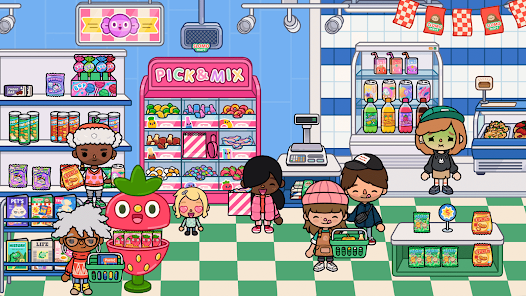
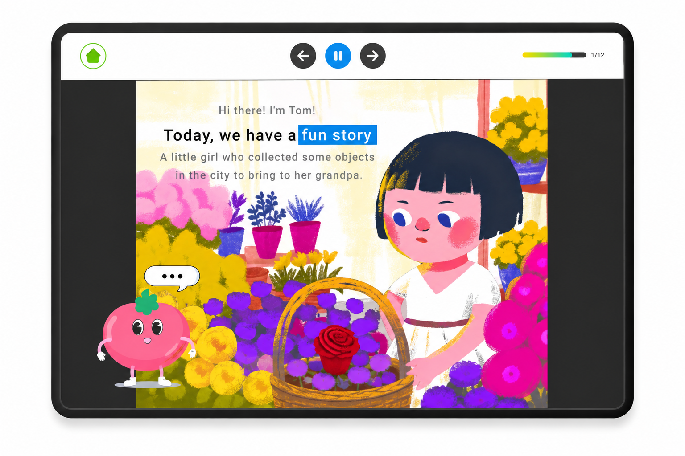
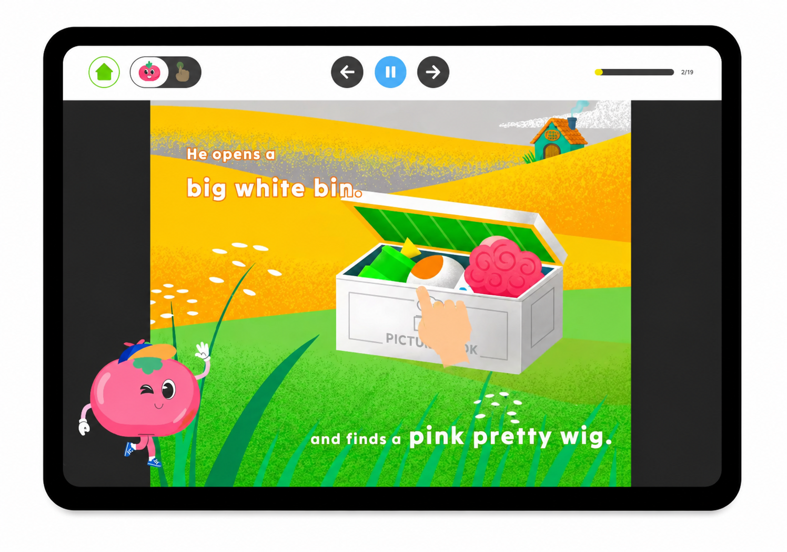

PictureCook
A children’s AI companion product that combines daily storytelling, expressive replies, and open-ended pretend play to build language confidence, creativity, and emotional connection.
Impact at a Glance
3,000+
Registered child users
↑ 50%
WAU increase week over week
18%
Day‑7 retention (2.5× industry)
>3 hrs
Weekly time spent per child
2×
Subscription growth after first AI feature
US$100K
Early‑stage investment raised
Motivation
Over 700 million children in Asia experience test-driven English education, where they memorise for exams but rarely speak. Research shows that having just one close friend to talk to makes children roughly 1.6× more likely to progress in language learning.
Product Strategy Overview
PictureCook grew around two complementary product experiences: one designed to build a daily relationship with an AI companion, and another designed to give children an open-ended space for creativity, emotional expression, and self-directed play.
Tom’s Diary
A daily AI companion experience that encourages children to reply through voice, photos, and drawings.
Tom’s Home
An open-ended play space where children can arrange objects, talk with Tom, and explore without fixed tasks.
Feature 1: Tom’s Diary – AI Companion
Ideation: Tom’s Diary
Every day, Tom the Tomato sends a postcard to the child, sharing an animated moment from his day and asking a question to encourage the child to share theirs. Children reply using voice recordings, photos, or drawings, and Tom responds again through AI.
Early Experiment
To validate emotional engagement before building the full AI feature, we partnered with a kindergarten in New Taipei City for a four-week physical postcard pilot.
We mailed illustrated story postcards every day
Children replied with drawings and writings
We mailed back personalized “Tom replies”
Children’s deep engagement and eagerness to keep sharing after receiving Tom’s return postcards confirmed that daily story sharing plus timely feedback can significantly boost motivation, creativity, and willingness to express themselves.



How might we…
Turn AI into a warm companion that children want to talk with every day.
Feature Design
- Daily postcards as conversations: our mascot Tom sends an animated postcard each day asking an open question. Children reply through voice recordings, photos or drawings and receive a personalised AI response.
- Friendly, intuitive design: early user tests showed that too much information distracts children, so I created a diary-style interface where only one page stays active at a time. Familiar icons and large buttons reduce cognitive load and encourage expressive replies.
- Iterative improvement through data: after launch, I monitored BigQuery and Google Analytics metrics weekly. Insights led to clearer tutorials, a reduced action zone and optimised AI prompts, resulting in higher completion rates and engagement.

Feature 2: Tom’s Home – Open-Ended Play
Background
While studying children’s games and toys, I noticed something puzzling. Most games have clear goals. Yet dollhouses have no fixed objective. Children simply move characters, rearrange furniture, or reenact daily routines. This made me wonder:
why do children engage in a play system without explicit tasks?
Ideation: Tom’s Home
After researching developmental psychology, I learned that dollhouses and pretend play help children:
Construct a worldview
They explore family roles, rules, and relationships through open-ended scenarios.
Develop emotional understanding
Children externalize inner feelings through characters, exploring different emotions in a safe micro-world.
Encourage creativity and decision making
By deciding where each item belongs, and with no right or wrong answer, children gain a sense of control that builds confidence.


Feature Design
- Real‑time AI chat anywhere: children can talk with Tom wherever they are in the house, blurring the boundary between play and conversation.
- Horizontally scrollable space: to give kids freedom to arrange furniture without clutter, rooms are shallow and horizontally scrollable. This encourages exploration instead of completing tasks.
- Movable objects & furniture: every item can be dragged, placed and animated. This free‑form interaction invites curiosity and fosters creativity and confidence.


Data-Driven Product Iteration
Hypothesis
Our initial product direction emphasized rich animations and multiple interactive elements on each screen.
Analysis
To validate user behavior, I defined 32 key behavioral data points and used AI-assisted SQL analysis in BigQuery to identify engagement patterns.
Insights
The data revealed that children engaged more effectively when each page focused on one clear interaction rather than multiple competing elements.
Impact
This insight led to a product-wide design shift toward single-action experiences, resulting in 3.5× higher engagement.


AI-Assisted Product Analytics
I used AI tools to help generate and refine BigQuery SQL queries for behavioral analysis.
Within 4 weeks, PictureCook reached 3,000+ registered child users, with weekly active users growing 50% week over week. Engagement signals showed strong product resonance: Day-7 retention reached 18% (2.5 times the typical benchmark for children’s learning apps), and children spent 3+ hours per week interacting with the AI companion.
After introducing the first AI feature, subscription growth doubled, validating the link between emotional engagement and business value.

Roadmap & Growth
Milestone 1 – Market Entry & Early Validation (Q4 2025)
- Raised US$100K in seed funding.
- Launched the first AI feature (Tom’s Diary).
- Subscriptions doubled after launch.
- Focused on Taiwan 🇹🇼, Japan 🇯🇵 and South Korea 🇰🇷, enabling children to learn English through interactive storybooks and a co‑learning AI buddy.
Milestone 2 – Expansion & Monetization Strategy (Q1 2026)
- Expanded to the U.S. 🇺🇸 market, shifting the focus from English‑learning to gamified experiences and AI companionship.
- Introduced a rewarding system featuring streaks, achievements, and progression mechanics to reinforce daily usage habits and improve long-term engagement.
- Launched a parental dashboard that enabled parents to track learning progress, monitor activity, and celebrate milestones, increasing accountability, family participation, and subscription retention.
Product Market Fit & Inclusive Design (Q2 2026)
- Stabilised product‑market fit and revenue in the U.S. 🇺🇸 market.
- Personalised content using in‑app level test results and expanded ADHD‑informed design for inclusive experiences.
Reflections & Takeaways
This experience taught me that the buyer and the user are not always the same person. For PictureCook, parents were the buyers, while children were the daily users. A successful product therefore had to do both: create an experience children genuinely wanted to play with, and communicate enough educational value, safety, and trust for parents to feel confident paying for it.
Looking back, one area I would improve is deeper discovery around parents’ concerns toward children using AI at an early age. We initially assumed that the strong need for English learning would outweigh these concerns, but parental hesitation still affected adoption. I learned that even when a product addresses a clear learning need, it is important to uncover the emotional barriers, trust gaps, and purchase motivations behind the buyer’s decision.